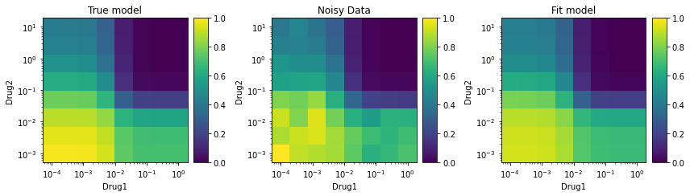

synergy - Python Package
 synergy - Python Package
synergy - Python Package
synergy
A python package to calculate, analyze, and visualize drug combination synergy and antagonism. Currently supports multiple models of synergy, including MuSyC, Bliss, Loewe, Combination Index, ZIP, Zimmer, BRAID, Schindler, and HSA.
Installation
Using PIP
pip install synergy
Using conda
not yet
Using git
git clone git@github.com:djwooten/synergy.git
cd synergy
pip install -e .
Example Usage
Generate synthetic data to fit
from synergy.combination import MuSyC
from synergy.utils.dose_tools import grid
Initialize a model. I will use the MuSyC synergy model to generate data, but it could be done using Zimmer or BRAID as well.
E0, E1, E2, E3 = 1, 0.7, 0.4, 0.
h1, h2 = 2.3, 0.8
C1, C2 = 1e-2, 1e-1
alpha12, alpha21 = 3.2, 1.1
gamma12, gamma21 = 2.5, 0.8
truemodel = MuSyC(E0=E0, E1=E1, E2=E2, E3=E3, h1=h1, h2=h2, C1=C1, C2=C2, \
alpha12=alpha12, alpha21=alpha21, gamma12=gamma12, \
gamma21=gamma21)
Display the model’s parameters
print(truemodel)
MuSyC(E0=1.00, E1=0.70, E2=0.40, E3=0.00, h1=2.30, h2=0.80, C1=1.00e-02, C2=1.00e-01, oalpha12=3.20, oalpha21=1.10, beta=0.67, gamma12=2.50, gamma21=0.80)
Evaluate the model at doses d1=C1, d2=C2 (a combination of the EC50 of each drug)
print(truemodel.E(C1, C2))
0.3665489890285983
Generate a dose sampling grid to make “measurements” at. Drug 1 will be sampled at 8 doses, logarithmically spaced from C1/100 to C1*100. Drug 2 will be likewise sampled around C2. (8 doses of Drug 1) X (8 doses of Drug 2) = 64 total measurements.
d1, d2 = grid(C1/1e2, C1*1e2, C2/1e2, C2*1e2, 8, 8)
print(d1.shape, d2.shape)
(64,) (64,)
Evaluate the model at those 64 dose combinations
E = truemodel.E(d1, d2)
print(E.shape)
(64,)
Add noise to get imperfect data
import numpy as np
E_noisy = E * (1+0.1*(2*np.random.rand(len(E))-1))
print(E_noisy.shape)
(64,)
Fit synergy model to data
Create a new synergy model to fit using the synthetic data. Here I use MuSyC, which is the same model we used to generate the synthetic data. bootstrap_iterations are used to get confidence intervals.
model = MuSyC()
model.fit(d1, d2, E_noisy, bootstrap_iterations=100)
print(model)
MuSyC(E0=0.93, E1=0.68, E2=0.42, E3=0.00, h1=1.86, h2=1.12, C1=9.64e-03, C2=1.24e-01, alpha12=3.75, alpha21=1.08, beta=0.81, gamma12=2.01, gamma21=0.98)
This prints the best fit and lower and upper bound confidence intervals (defaults to 95%) for each parameter.
print(model.get_parameters())
{'E0': (0.93, [ 0.91223345 0.96329156]),
'E1': (0.68, [ 0.64643766 0.70749396]),
'E2': (0.42, [ 0.39022822 0.44990642]),
'E3': (0.00, [-0.02507603 0.02363363]),
'h1': (1.86, [ 1.26005438 2.73713318]),
'h2': (1.12, [ 0.93018994 1.43865508]),
'C1': (9.64e-03, [ 0.00760803 0.01384544]),
'C2': (1.24e-01, [ 0.10018859 0.15263104]),
'alpha12': (3.75, [ 2.85988609 4.6230902 ]),
'alpha21': (1.08, [ 0.73239517 1.79969918]),
'beta': (0.81, [ 0.69827786 0.95770258]),
'gamma12': (2.01, [ 1.44083572 2.76863031]),
'gamma21': (0.98, [ 0.56548907 1.83905139])}
Visualize
from matplotlib import pyplot as plt
from synergy.utils import plots
fig = plt.figure(figsize=(12,6))
ax = fig.add_subplot(131)
truemodel.plot_colormap(d1, d2, xlabel="Drug1", ylabel="Drug2", title="True model", ax=ax, vmin=0, vmax=1)
ax = fig.add_subplot(132)
plots.plot_colormap(d1, d2, E_noisy, ax=ax, title="Noisy Data", cmap="viridis", xlabel="Drug1", ylabel="Drug2", vmin=0, vmax=1)
ax = fig.add_subplot(133)
model.plot_colormap(d1, d2, xlabel="Drug1", ylabel="Drug2", title="Fit model", ax=ax, vmin=0, vmax=1)
plt.tight_layout()

Publications
synergy - A Python library for calculating, analyzing, and visualizing drug combination synergy

Charting the Fragmented Landscape of Drug Synergy

A Consensus Framework Unifies Multi-Drug Synergy Metrics

Quantifying Drug Combination Synergy along Potency and Efficacy Axes